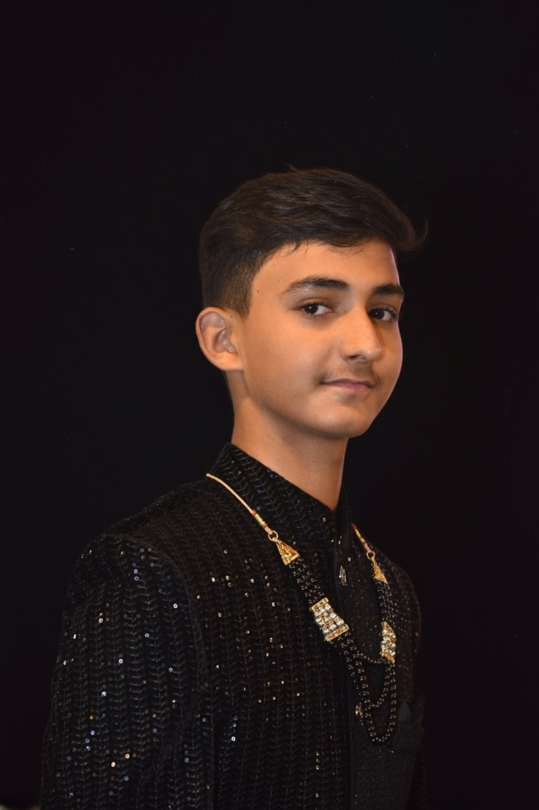

[ GYAN KI VEDA // DIGITAL PORTAL ]
:: WELCOME PROFESSOR :: ACCESS LEVEL: MULTIVERSE REALITY INITIATED (v0.1.5)
[ ACCESS LOG ] PROJECT OVERVIEW
DATA TYPE: GRAPHIC NOVEL / CODE-FICTION COMIC SERIES
SUMMARY: **GYAN KI VEDA** is not just fiction; it's a **TALE WHERE UNIVERSES COLLIDE**. It follows an ordinary Indian boy whose life is hijacked by destiny, promoting **IMAGINATION TO REALITY** through code and multiverse glitches. This portal grants access to the archived volumes of this high-level reality documentation.
[ CORE DATA ] RESEARCH TEAM PROFILE

Gyan Vardhan (ज्ञान वर्धन)
Specialization: **Reality Glitch Analysis & Code Fiction Synthesis.** Primary source of VEDA timeline data and narrative structure. Responsible for initiating the Glitch Protocol.
Jai Vardhan (जय वर्धन)
Specialization: **Structural Consistency & Universal Law Enforcement.** Ensures that the VEDA narrative maintains logical flow and prevents timeline paradoxes within the comic data stream.
Harsh Vardhan (हर्ष वर्धन)
Specialization: **Chronological Sequencing & User Experience (UX).** Manages the reader's journey, making sure the complex multiverse story is delivered in an understandable and engaging format.
[ FREE ACCESS ] GYAN KI VEDA - PART 1 // CORE DATA DOWNLOAD

Status: ONLINE. Access Granted. Download the first unit of GYAN KI VEDA. Proceed with research protocol. **(Note: This Volume is currently available for Free Download.)**
⬇ PROTOCOL INITIATE: DOWNLOAD ⬇[ LOCKED ] GYAN KI VEDA - PART 2 // REALITY FRACTURE IMMINENT
Status: PENDING. Next dimension access is currently restricted. Price: **PRICE DATA PENDING**
 :: LAUNCH PROTOCOL BLOCKED ::
:: LAUNCH PROTOCOL BLOCKED ::